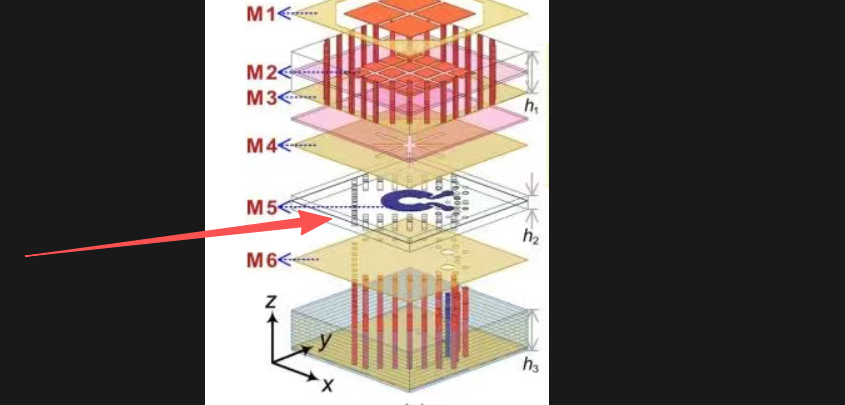
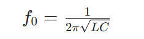
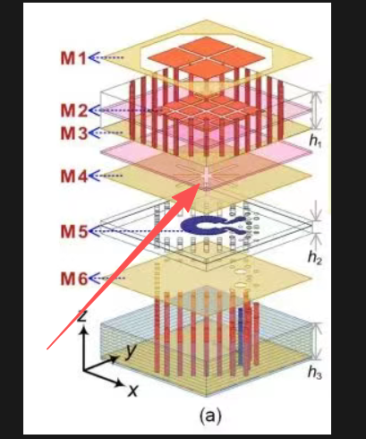

结构积累
C型环结构SRR

SRR结构再其中的作用和原理：
多级 SIW 腔体 + C 型 SRR 谐振单元组合耦合，利用 SRR 的谐振特性抑制带外杂散频率，工作频点避开 SRR 阻带、在通带内正常透传，带外频率被 SRR 谐振抑制、无法向上耦合传输，以此实现带通滤波效果。
在天线中绝大多数场景下，就是用来做滤波的
这种 C 型 / 开口环谐振器（Split Ring Resonator, SRR），本质上是一个平面 LC 谐振电路，它在天线里最主要的作用就是：
作为带通 / 带阻滤波器的谐振单元
实现 “天线 + 滤波” 一体化，省去额外的射频滤波器，让结构更紧凑
滤波核心原理拆解：
C 型开口环的每一部分，都对应一个集总电路元件：
- 环本身等效为一个电感L，电流在环上流动产生磁场
- 开口缝隙处等效为一个电容 C，开口两端的金属极板形成平行板电容
- 整体就构成了一个LC并联谐振回路。谐振频率公式

只要调整环的周长、开口的宽度，就能精准控制谐振频率 f₀。
如何实现滤波
模式 1：带阻滤波（陷波）—— 最常见的用法
工作逻辑：当电磁波频率等于 SRR 的谐振频率 f₀ 时，这个 LC 回路会发生并联谐振，阻抗变得极大，相当于 “开路”，把这个频率的信号 “卡住”，无法通过。
天线里的应用：在宽带天线的馈电路径上加载 SRR，就能在特定频率（比如干扰信号频段）产生一个很深的陷波，抑制杂波干扰，比如在超宽带天线里滤除 5GHz WLAN 信号。
SRR 阻带：
模式 2：带通滤波（谐振选通）
工作逻辑：多个 SRR 通过耦合排列（比如三阶、四阶开口环滤波器），通过谐振器之间的电磁耦合，形成通带。在通带内信号可以低损耗通过，通带外被抑制。
天线里的应用：像你图里这种，放在天线馈电链路中，就相当于给天线内置了一个带通滤波器，只让工作频段的信号通过，实现 “天线 + 滤波” 一体化。
做滤波的优势
强谐振特性：SRR 的 LC 谐振非常尖锐，滤波的 Q 值（品质因数）更高，带外抑制效果更好，陷波更深。
尺寸紧凑：它的谐振频率由 LC 决定，环的尺寸可以做得比波长小很多（亚波长），特别适合多层 PCB 的紧凑集成。
设计灵活：调整开口宽度、环的尺寸、多个环的间距，就能轻松调整谐振频率、耦合强度和滤波带宽，适配不同的天线频段需求。
十字/米字圆极化

圆极化硬性条件必须同时满足：
- 存在两个空间互相正交的电场分量（Eₓ、Eᵧ）
- 两个分量幅度近似相等
- 相位差严格 ±90°
M4 结构刚好精准满足：
十字 = 两组正交金属臂
分别对应 X、Y 方向，天生激励出正交两组表面电流 / 电场。
米字 / 多斜向分支
进一步拆分场分量、微调耦合路径长度，人为制造两路信号传播路径差 → 产生固定 90° 相位差。
上下不对称图形（上十字、下米字）
用来平衡正交双模的耦合强度，让 Eₓ、Eᵧ 幅度接近一致，杜绝 “一个太强、一个太弱” 变成椭圆极化。
下层米字形耦合结构：引入两路正交分量的 **±90° 相位差 **（双旋向核心）
上层十字正交金属结构：稳定激励 X/Y 正交电场、平衡两路幅度，二者配合，同时满足左旋、右旋两套圆极化条件。